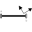
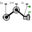
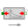

CylinderBaseOne cylinder with analytic handling of kinematic loop |
|
Diagram
{kind=link}
Information
This information is part of the Modelica Standard Library maintained by the Modelica Association.
Slider-crank mechanism with analytic handling of kinematic loop to model one cylinder in an engine.
Parameters (20)
| animation |
Value: true Type: Boolean Description: = true, if animation shall be enabled |
|---|---|
| cylinderTopPosition |
Value: 0.42 Type: Length (m) Description: Length from crank shaft to end of cylinder. |
| crankLength |
Value: 0.14 Type: Length (m) Description: Length of crank shaft in x direction |
| crankPinOffset |
Value: 0.05 Type: Length (m) Description: Offset of crank pin from center axis |
| crankPinLength |
Value: 0.1 Type: Length (m) Description: Offset of crank pin from center axis |
| cylinderInclinationAngle |
Value: 0 Type: Angle_deg (°) Description: Inclination of cylinder |
| crankAngleOffset |
Value: 0 Type: Angle_deg (°) Description: Offset for crank angle |
| pistonLength |
Value: 0.1 Type: Length (m) Description: Length of cylinder |
| pistonCenterOfMass |
Value: pistonLength / 2 Type: Length (m) Description: Distance from frame_a to center of mass of piston |
| pistonMass |
Value: 6 Type: Mass (kg) Description: Mass of piston |
| pistonInertia_11 |
Value: 0.0088 Type: Inertia (kg·m²) Description: Inertia 11 of piston with respect to center of mass frame, parallel to frame_a |
| pistonInertia_22 |
Value: 0.0076 Type: Inertia (kg·m²) Description: Inertia 22 of piston with respect to center of mass frame, parallel to frame_a |
| pistonInertia_33 |
Value: 0.0088 Type: Inertia (kg·m²) Description: Inertia 33 of piston with respect to center of mass frame, parallel to frame_a |
| rodLength |
Value: 0.175 Type: Length (m) Description: Length of rod |
| rodCenterOfMass |
Value: rodLength / 2 Type: Length (m) Description: Distance from frame_a to center of mass of piston |
| rodMass |
Value: 1 Type: Mass (kg) Description: Mass of rod |
| rodInertia_11 |
Value: 0.006 Type: Inertia (kg·m²) Description: Inertia 11 of rod with respect to center of mass frame, parallel to frame_a |
| rodInertia_22 |
Value: 0.0005 Type: Inertia (kg·m²) Description: Inertia 22 of rod with respect to center of mass frame, parallel to frame_a |
| rodInertia_33 |
Value: 0.006 Type: Inertia (kg·m²) Description: Inertia 33 of rod with respect to center of mass frame, parallel to frame_a |
| cylinderLength |
Value: cylinderTopPosition - (pistonLength + rodLength - crankPinOffset) Type: Length (m) Description: Maximum length of cylinder volume |
Connectors (4)
Components (9)
| mid |
Type: FixedTranslation |
|
|---|---|---|
| mounting |
Type: FixedTranslation |
|
|  | cylinderInclination |
Type: FixedRotation |
| crankAngle |
Type: FixedRotation |
|
|  | jointRRP |
Type: JointRRP |
| connectingRod |
Type: BodyShape |
|
| piston |
Type: BodyShape |
|
|  | gasForce |
Type: GasForce2 |
| crank |
Type: FixedTranslation |
Extended by (1)
|
Modelica.Mechanics.MultiBody.Examples.Loops.Utilities One cylinder with analytic handling of kinematic loop and CAD visualization |